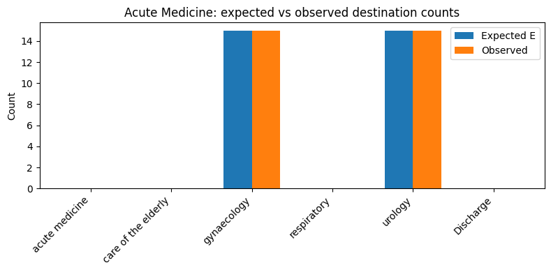

4f. Evaluate transfer predictions
Notebooks 4c and 4d focus on ED admissions and yet-to-arrive bed demand. Production at UCLH also predicts inpatient outflows: patients leaving a subspecialty either by internal transfer to another specialty or by discharge from hospital. This notebook evaluates the transfer-routing part of that system — whether observed destinations from each source specialty match the model's patient-level routing tables.
Throughout, departure means leaving the current subspecialty, not necessarily leaving the hospital. A departure event ends up in another specialty's column or in the Discharge column of the routing table.
Production transfer prediction uses subgroup routing (the same age/sex subgroup idea as notebook 4b, but applied here to transfers rather than ED admissions). Each departing patient is assigned to a subgroup; their routing vector comes from that subgroup's fitted table. Age and sex matter because they let the model down-weight implausible routes (for example, sending a male patient to gynaecology). Each departure is therefore a draw from Categorical(p_i) where p_i is patient-specific (via age/sex subgroup routing), not from a single source-level probability vector.
Notebook 4d showed how patientflow.evaluate scores classifiers, bed-demand PMFs, and yet-to-arrive arrival rates. This notebook adds the sixth evaluation mode: transition_matrix, which checks whether that transfer routing is calibrated at each source subspecialty.
The transition-matrix evaluation asks a conditional question:
Given that patients departed from source
sduring the evaluation window, with the subgroup mix that actually left, do their observed destinations match the routing the model would have applied patient-by-patient?
The test compares observed destination counts (transfers to each specialty plus discharges) to patient-level expected counts E_d = Σ_i p_i(d), where each row p_i is built from the patient's subgroup table. A Monte Carlo Pearson X² test simulates specialty departures by drawing each event from its own Categorical(p_i) — not from one shared Multinomial(N, p̄).
For each departing patient, the routing vector p_i encodes two linked decisions: whether they discharge from hospital or transfer internally, and — if they transfer — which specialty they go to. The Pearson test rolls both into one summary p-value per source, so a flagged source may have the wrong discharge rate, the wrong transfer destinations, or both. Compare the stored expected and observed counts destination by destination (especially Discharge versus the specialty columns) to see which part is miscalibrated.
What this mode does not test:
- Departure volume from a source — the test is conditional on
Npatients having left that specialty. If Acute Medicine releases twice as many patients as the model expected, every row can still pass; checking departure rates is a separate evaluation. - Column-level inflow calibration — each source is tested on its own outflows. Respiratory could receive the right total number of transfers while those patients come from the wrong sources; every source row might pass even though the destination column is wrong.
- Routing drift within the window — all departures from a source in the evaluation window are pooled into one test. A pathway change mid-window (routing correct before and after, wrong in between) can look like miscalibration rather than a timing effect.
- Cross-source correlations — sources are scored independently. Coordinated shifts across several specialties (for example, a hospital-wide bed-management policy) are not modelled.
- Subgroup classifier accuracy — the test treats each patient's age/sex subgroup as given. If subgroups are misassigned at fit or predict time, that error affects both the expected counts and the simulated draws, and this test cannot detect it.
This notebook generates fake transfer history on-the-fly (no UCLH data required) and walks through:
- Fit a
TransferProbabilityEstimatorwith sex-split routing from Acute Medicine. - Build per-patient routing vectors and aggregate expected counts.
- Register evaluation departure events and run the Pearson goodness-of-fit test directly.
- Wire
EvaluationInputsBuilder/run_evaluationand inspect scalar rows inscalars.json.
# Reload functions every time
%load_ext autoreload
%autoreload 2
1. Fit a transfer model on fake history
We use a deliberately simple routing story so the evaluation is easy to follow. At UCLH, a typical transfer from Acute Medicine might be to Care of the Elderly or Respiratory. Neither destination is sex-exclusive, which makes a clean subgroup demo harder. Here we use gynaecology for female patients and urology for male patients instead: both are plausible inpatient destinations, and the sex split matches the subgroup tables the estimator fits.
- Acute Medicine, female → gynaecology
- Acute Medicine, male → urology
- Care of the Elderly patients mostly discharge (no internal transfer in the training history)
The fitted estimator stores subgroup-specific tables under transfer_probabilities[cohort]["subgroups"]. Production and this evaluation both route patient-by-patient from those tables.
import numpy as np
import pandas as pd
from IPython.display import display
from patientflow.predictors.transfer_predictor import TransferProbabilityEstimator
services = [
"acute medicine",
"care of the elderly",
"respiratory",
"gynaecology",
"urology",
]
cohort = "emergency"
source = "acute medicine"
females = pd.DataFrame(
{
"current_subspecialty": [source] * 40,
"next_subspecialty": ["gynaecology"] * 40,
"admission_type": [cohort] * 40,
"age_on_arrival": [30] * 40,
"sex": ["F"] * 40,
}
)
males = pd.DataFrame(
{
"current_subspecialty": [source] * 40,
"next_subspecialty": ["urology"] * 40,
"admission_type": [cohort] * 40,
"age_on_arrival": [30] * 40,
"sex": ["M"] * 40,
}
)
discharges = pd.DataFrame(
{
"current_subspecialty": ["care of the elderly"] * 20,
"next_subspecialty": [None] * 20,
"admission_type": [cohort] * 20,
"age_on_arrival": [82] * 20,
"sex": ["F"] * 20,
}
)
training_history = pd.concat([females, males, discharges], ignore_index=True)
transfer_model = TransferProbabilityEstimator(cohort_col="admission_type")
transfer_model.fit(training_history, set(services))
destinations = list(transfer_model.get_transition_matrix(cohort).columns)
print(f"Fitted transfer model with {len(services)} services and {len(destinations)} destination columns")
Fitted transfer model with 5 services and 6 destination columns
2. Per-patient routing vectors
Within the trained instance of TransferProbabilityEstimator, the method build_per_patient_probabilities resolves each departing patient's subgroup and reads that subgroup's routing row. Summing the rows gives patient-level expected counts E; that is what the Pearson test compares to observed destination counts (shown later).
For each event i, the vector p_i is built as p_i(T) = q_transfer_i × q_dest_i(T) for transfer destinations T, and p_i(Discharge) = 1 − q_transfer_i.
To demonstrate the build_per_patient_probabilities method, we create two example events.
from patientflow.predict.transfers import build_per_patient_probabilities
# Two hypothetical departures from Acute Medicine (one female, one male).
# next_subspecialty is the observed destination in evaluation data; here it
# illustrates plausible routes, but build_per_patient_probabilities reads
# age/sex to look up model probabilities, not this column.
example_events = pd.DataFrame(
{
"current_subspecialty": [source, source], # source specialty each patient is leaving
"next_subspecialty": ["gynaecology", "urology"], # where they went (observed destination)
"admission_type": [cohort, cohort], # elective/emergency cohort key for the fitted tables
"age_on_arrival": [30, 30], # used with sex to resolve the patient's subgroup
"sex": ["F", "M"], # resolves to female vs male subgroup routing rows
}
)
# For each row, look up subgroup routing and return a probability vector p_i
# over all destination columns (specialties plus Discharge).
#
pp = build_per_patient_probabilities(
example_events,
source, # filter to departures leaving this source specialty
cohort, # which cohort's subgroup tables to read
destinations, # column order aligned with the fitted estimator
transfer_model,
)
# pp.routing_matrix has shape (n_events, n_destinations): one routing row per departure.
pp_df = pd.DataFrame(pp.routing_matrix, columns=destinations, index=["female_patient", "male_patient"])
print("Per-patient routing vectors p_i (rows sum to 1):")
display(pp_df.round(3))
Per-patient routing vectors p_i (rows sum to 1):
| acute medicine | care of the elderly | gynaecology | respiratory | urology | Discharge | |
|---|---|---|---|---|---|---|
| female_patient | 0.0 | 0.0 | 1.0 | 0.0 | 0.0 | 0.0 |
| male_patient | 0.0 | 0.0 | 0.0 | 0.0 | 1.0 | 0.0 |
3. Evaluation departure events
Now we will run an evaluation assuming we have a test set recording 30 departure events that occurred during an evaluation window. We register one row per observed departure. (Note that the caller must pre-filter to the window; the builder does not apply a date filter.)
We include:
- Acute Medicine: 30 departures with the expected sex split and destinations (well calibrated).
- Respiratory: a few discharges (destinations
None→Discharge). - Care of the Elderly: no departures in this window (handler will emit a skip row).
We also keep a separate miscalibrated Acute Medicine frame (all females routed to urology instead of gynaecology) for the direct goodness-of-fit demo in section 5.
n_female = 15
n_male = 15
eval_events = pd.DataFrame(
{
"current_subspecialty": [source] * (n_female + n_male)
+ ["respiratory"] * 4,
"next_subspecialty": ["gynaecology"] * n_female
+ ["urology"] * n_male
+ [None] * 4,
"admission_type": [cohort] * (n_female + n_male + 4),
"age_on_arrival": [30] * (n_female + n_male) + [65] * 4,
"sex": ["F"] * n_female + ["M"] * n_male + ["M"] * 4,
}
)
miscalibrated_events = pd.DataFrame(
{
"current_subspecialty": [source] * 80,
"next_subspecialty": ["urology"] * 80,
"admission_type": [cohort] * 80,
"age_on_arrival": [30] * 80,
"sex": ["F"] * 80,
}
)
print(f"Evaluation window departures: {len(eval_events)}")
print(eval_events.groupby(["current_subspecialty", "next_subspecialty"]).size())
Evaluation window departures: 34
current_subspecialty next_subspecialty
acute medicine gynaecology 15
urology 15
dtype: int64
4. Expected vs observed counts for one source
Before running the Pearson test in section 5, this section shows the two count vectors the test compares — expected from the model and observed from the data.
For source Acute Medicine, filter events, build the routing matrix, and aggregate:
E = routing_matrix.sum(axis=0)— patient-level expected counts per destinationn_obs— observed destination counts fromnext_subspecialty(Nonecounts asDischarge)
When the subgroup mix matches the model and destinations follow routing, E and n_obs should align closely, as illustrated in the figure.
import matplotlib.pyplot as plt
source_events = eval_events.loc[eval_events["current_subspecialty"] == source]
pp_source = build_per_patient_probabilities(
source_events, source, cohort, destinations, transfer_model
)
expected = pp_source.routing_matrix.sum(axis=0)
n_obs = np.zeros(len(destinations), dtype=int)
dest_to_idx = {d: i for i, d in enumerate(destinations)}
for dest in source_events["next_subspecialty"]:
key = "Discharge" if dest is None or pd.isna(dest) else str(dest)
n_obs[dest_to_idx[key]] += 1
comparison = pd.DataFrame(
{"expected": expected, "observed": n_obs}, index=destinations
)
print(
f"Acute Medicine: {len(source_events)} departures, "
f"{pp_source.n_subgroups_used} subgroups used, "
f"{pp_source.n_excluded_unmatched} unmatched (all-discharge)"
)
display(comparison.round(2))
fig, ax = plt.subplots(figsize=(8, 4))
x = np.arange(len(destinations))
width = 0.35
ax.bar(x - width / 2, expected, width, label="Expected E")
ax.bar(x + width / 2, n_obs, width, label="Observed")
ax.set_xticks(x)
ax.set_xticklabels(destinations, rotation=45, ha="right")
ax.set_ylabel("Count")
ax.set_title("Acute Medicine: expected vs observed destination counts")
ax.legend()
plt.tight_layout()
plt.show()
Acute Medicine: 30 departures, 2 subgroups used, 0 unmatched (all-discharge)
| expected | observed | |
|---|---|---|
| acute medicine | 0.0 | 0 |
| care of the elderly | 0.0 | 0 |
| gynaecology | 15.0 | 15 |
| respiratory | 0.0 | 0 |
| urology | 15.0 | 15 |
| Discharge | 0.0 | 0 |

5. Monte Carlo Pearson test (direct call)
Section 4 showed whether E and n_obs align by eye; this section turns that comparison into a formal goodness-of-fit test and p-value.
Because each departure has its own routing vector, there is no simple formula for the p-value. Monte Carlo simulation replays the same N departures many times: on each replay, every patient gets a fresh simulated destination drawn from their own Categorical(p_i), we recount destinations, and compute a Pearson statistic. Comparing the observed statistic to this simulated distribution yields the p-value.
multinomial_gof_montecarlo in patientflow.evaluate.goodness_of_fit implements the test as follows:
- Compute
T_obs = Pearson(n_obs, E)using only destinations withE_d > 0. - For each simulation, draw one destination per event from
Categorical(p_i), aggregate counts, and computeT_sim. - Return
p_value = (1 + count(T_sim >= T_obs)) / (M + 1)(the +1 correction keeps the p-value valid whenT_obsis extreme).
Destinations with E_d = 0 are omitted from the Pearson sum. If any observed count lands on such a destination, that is a structural violation — the model assigned zero probability to a destination that received traffic — and is reported separately on the scalar row.
We use Pearson X² rather than a G-statistic because, once routing is patient-specific, the null is no longer a homogeneous multinomial. Pearson is defined directly on (n_d − E_d) aggregated from per-patient residuals.
The p-value is the proportion of simulated replays at least as mismatched as the data we saw: low values suggest the overall pattern of observed destinations is unlikely if the model were correct; high values mean the observed counts are plausible under the model. Well-calibrated Acute Medicine events should score high; our miscalibrated example (females sent to urology instead of gynaecology) should score low. Also note N (the number of departures): with only a few events, counts can look odd by chance even when routing is fine; with larger N, a low p-value is stronger evidence of genuine miscalibration.
from patientflow.evaluate.goodness_of_fit import multinomial_gof_montecarlo
def run_gof(events: pd.DataFrame, source_name: str, *, seed: int = 7) -> None:
source_events = events.loc[events["current_subspecialty"] == source_name]
pp = build_per_patient_probabilities(
source_events, source_name, cohort, destinations, transfer_model
)
n_obs_local = np.zeros(len(destinations), dtype=int)
for dest in source_events["next_subspecialty"]:
key = "Discharge" if dest is None or pd.isna(dest) else str(dest)
n_obs_local[dest_to_idx[key]] += 1
result = multinomial_gof_montecarlo(
pp.routing_matrix, n_obs_local, destinations, n_simulations=2000, seed=seed
)
print(
f"{source_name}: N={result.n_observed}, "
f"Pearson X²={result.pearson_x2:.2f}, p={result.p_value:.4f}, "
f"structural_violations={result.n_structural_violations}"
)
print("Well-calibrated evaluation events:")
run_gof(eval_events, source)
print("\nMiscalibrated events (females observed at urology, model expects gynaecology):")
run_gof(miscalibrated_events, source, seed=11)
Well-calibrated evaluation events:
acute medicine: N=30, Pearson X²=0.00, p=1.0000, structural_violations=0
Miscalibrated events (females observed at urology, model expects gynaecology):
acute medicine: N=80, Pearson X²=80.00, p=0.0005, structural_violations=1
6. Wire the evaluate package
Sections 2–5 ran the test step by step on our fake data, for one source at a time. In production we use the same patientflow.evaluate framework as notebook 4d: declare a target, register the fitted transfer model and departure events on the builder, then let run_evaluation score every source and write the results to scalars.json.
The pattern matches 4d, but with a single transition_matrix target and add_transition_matrix on the builder.
| Field | Value in this notebook |
|---|---|
evaluation_mode |
"transition_matrix" |
flow_name |
"inpatient_transfers" (must match add_transition_matrix) |
flow_type |
"departures" (reporting label) |
component |
"transition_matrix_row" (scalar family name) |
observation_mode |
omitted (not used for this mode) |
The handler emits one scalar row per estimator source (active or skipped). Skip reasons include:
no_observed_departures— no traffic from that source in the windowall_discharge_expected— every event resolves to all-discharge routing (degenerate Pearson test)
Active rows store destinations, expected_counts, observed_counts, pearson_x2, and p_value. The reliable flag is true when n_departures >= 30 (RELIABILITY_MIN_OBSERVATIONS_TRANSITION).
from datetime import timedelta
from patientflow.evaluate.inputs import EvaluationInputsBuilder, EvaluationTarget
from patientflow.predict.demand import FlowSelection
prediction_time = (6, 0)
prediction_dict = {prediction_time: timedelta(hours=8)}
transition_target = EvaluationTarget(
flow_name="inpatient_transfers",
flow_type="departures",
evaluation_mode="transition_matrix",
component="transition_matrix_row",
)
builder = (
EvaluationInputsBuilder(
flow_selection=FlowSelection.custom(
include_ed_current=False,
include_ed_yta=False,
include_non_ed_yta=False,
include_elective_yta=False,
include_transfers_in=True,
include_departures=True,
),
prediction_dict=prediction_dict,
)
.with_evaluation_targets([transition_target])
.add_transition_matrix(
"inpatient_transfers",
transfer_model,
eval_events,
cohort=cohort,
n_simulations=2000,
seed=99,
)
)
inputs = builder.build()
print(f"Registered target: {transition_target.evaluation_mode} / {transition_target.flow_name}")
Registered target: transition_matrix / inpatient_transfers
7. Run evaluation
run_evaluation writes scalars.json under a timestamped directory. Transition-matrix mode does not produce PNG charts (charts_generated: false); drill-down uses the stored count vectors.
import json
from datetime import datetime
from pathlib import Path
from patientflow.evaluate.runner import run_evaluation
run_name = f"notebook4f_{datetime.now().strftime('%Y%m%d_%H%M%S')}"
out = run_evaluation(
Path("eval-output"),
inputs,
run_name=run_name,
charts="all",
)
8. Inspect scalar rows
Load evaluation_rows and the _service_summary slice for this target. Rank active sources by p-value and inspect expected vs observed vectors for any flagged source.
from IPython.display import display
scalars_path = out["scalars_path"]
payload = json.loads(scalars_path.read_text(encoding="utf-8"))
rows = payload["evaluation_rows"]
tm_rows = [r for r in rows if r["evaluation_mode"] == "transition_matrix"]
summary_key = "transition_matrix/inpatient_transfers/transition_matrix_row"
summary = payload["_service_summary"]["by_slice"][summary_key]
print("Service summary:", summary)
base_cols = [
"service",
"n_departures",
"skip_reason",
"pearson_x2",
"p_value",
"reliable",
"n_excluded_unmatched",
]
tm_df = pd.DataFrame(tm_rows)
display(tm_df[[c for c in base_cols if c in tm_df.columns]])
if "skip_reason" in tm_df.columns:
active = tm_df[tm_df["skip_reason"].isna()]
else:
active = tm_df
if not active.empty and "destinations" in active.columns:
am_row = active.loc[active["service"] == source].iloc[0]
drill = pd.DataFrame(
{
"expected": am_row["expected_counts"],
"observed": am_row["observed_counts"],
},
index=am_row["destinations"],
)
print(f"\n{source.title()} drill-down from scalars.json:")
display(drill.round(2))
Service summary: {'mode': 'transition_matrix', 'flow': 'inpatient_transfers', 'component': 'transition_matrix_row', 'cohort': 'emergency', 'n_active_sources': 1, 'n_skipped_sources': 4, 'skipped_by_reason': {'no_observed_departures': 3, 'all_discharge_expected': 1}, 'n_excluded_unmatched_departures': 4}
| service | n_departures | skip_reason | pearson_x2 | p_value | reliable | n_excluded_unmatched | |
|---|---|---|---|---|---|---|---|
| 0 | acute medicine | 30 | NaN | 0.0 | 1.0 | True | 0.0 |
| 1 | care of the elderly | 0 | no_observed_departures | NaN | NaN | False | NaN |
| 2 | gynaecology | 0 | no_observed_departures | NaN | NaN | False | NaN |
| 3 | respiratory | 4 | all_discharge_expected | NaN | NaN | False | NaN |
| 4 | urology | 0 | no_observed_departures | NaN | NaN | False | NaN |
Acute Medicine drill-down from scalars.json:
| expected | observed | |
|---|---|---|
| acute medicine | 0.0 | 0 |
| care of the elderly | 0.0 | 0 |
| gynaecology | 15.0 | 15 |
| respiratory | 0.0 | 0 |
| urology | 15.0 | 15 |
| Discharge | 0.0 | 0 |
Summary
In this notebook we fitted a transfer model on fake Acute Medicine routing, built per-patient expected counts, compared them to observed destinations, ran the Monte Carlo Pearson test directly, and then wired the same check into patientflow.evaluate to produce scalar rows in scalars.json.
- Production and evaluation both route departures patient-by-patient from subgroup tables (
transfer_probabilities[cohort]["subgroups"][g]). build_per_patient_probabilitiesassembles per-event vectorsp_i; summing rows gives patient-level expectationsE.multinomial_gof_montecarloruns a Monte Carlo Pearson test by simulating each departure from its ownCategorical(p_i).EvaluationTarget(evaluation_mode="transition_matrix")plusadd_transition_matrixintegrates the test intorun_evaluation, emitting one scalar row per source and a_service_summaryslice.
For flagged sources with sufficient N, compare expected_counts and observed_counts per destination to distinguish a transfer-rate error (the Discharge slot) from a destination-mix error among transferred patients.